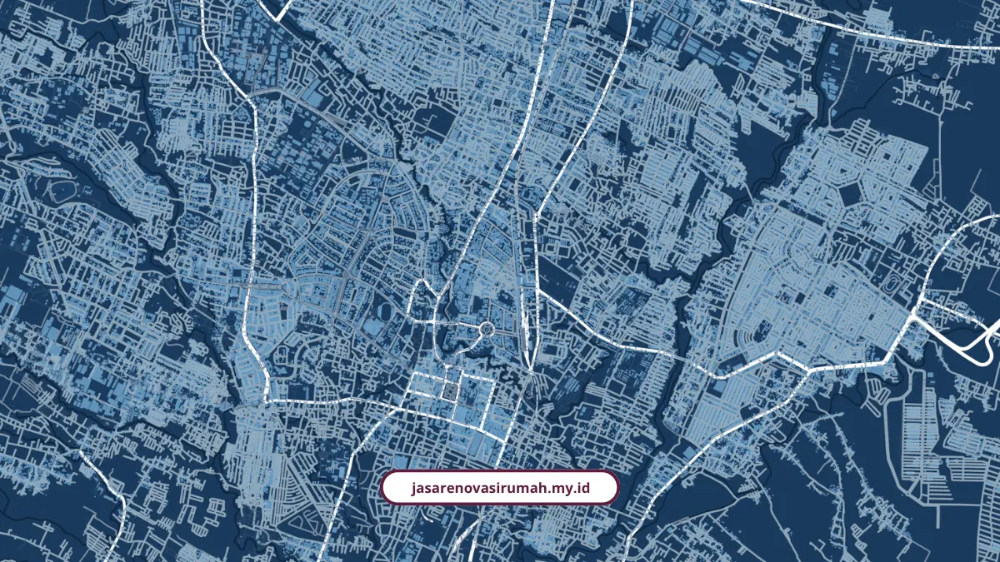
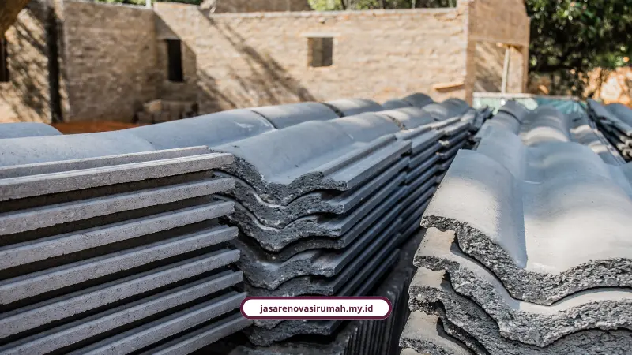

Wilayah layanan renovasi Jatim dari kami mencakup tiga pusat pertumbuhan utama, yaitu Surabaya, Sidoarjo, dan Malang. Setiap wilayah punya karakter, biaya, dan aturan sendiri yang wajib dipahami sebelum mulai proyek.
Siapa Saja yang Cocok Pakai Layanan Renovasi Kami?
Layanan kami cocok untuk pasangan muda, keluarga berkembang, profesional, pemilik usaha seperti ruko atau kafe, sampai investor properti berusia 28 sampai 55 tahun.
Kebutuhan utamanya biasanya sama: takut overbudget, ingin hasil modern yang efisien lahan, dan butuh kepraktisan karena tidak sempat mengawasi tukang tiap hari.
Bagaimana Layanan Renovasi Kami di Surabaya?
Di Surabaya, tantangan utamanya soal akses. Renovasi di kawasan pusat atau selatan sering menghadapi jalan dan gang padat, sehingga ongkos mobilisasi material bisa berbeda dengan Surabaya timur atau barat.
- Renovasi ringan (cat ulang, ganti keramik sebagian, perbaikan atap bocor): Rp80.000 sampai Rp150.000 per meter persegi, total estimasi tipe 36-45 sekitar Rp15 juta sampai Rp35 juta
- Renovasi sedang (ganti lantai, perbaikan dinding, tambah kamar mandi): Rp200.000 sampai Rp350.000 per meter persegi, total untuk tipe 60 sekitar Rp50 juta sampai Rp100 juta
- Renovasi berat/total (bongkar struktur, tambah lantai 2): Rp2,5 juta sampai Rp4,5 juta per meter persegi
Andi Baso Mappaturi, Wakil Ketua Himpunan Desainer Interior Indonesia Jawa Timur, mengatakan bahwa desain minimalis tetap bertahan, tapi tren saat ini lebih beragam karena banyak orang terinspirasi dari kafe yang punya gaya interior unik dan berbeda.
Bagaimana Layanan Renovasi Kami di Sidoarjo?
Di Sidoarjo, pertumbuhan infrastruktur dan perumahan tipe 36 sampai 45 berlangsung cukup pesat, dan pengerjaan renovasi kami di sana didukung jaringan toko bangunan besar di sekitar lokasi.
Faktor yang perlu diperhatikan adalah aksesibilitas gang untuk kendaraan material, dan kami selalu menyarankan dana cadangan 10 sampai 20 persen dari total RAB untuk mengantisipasi kerusakan tersembunyi seperti kayu lapuk atau pipa bocor.
Gambaran lengkap soal survei gratis dan desain 3D yang kami tawarkan khusus wilayah ini, sudah kami bahas tuntas di jasa renovasi rumah melayani Sidoarjo.
Bagaimana Layanan Renovasi Kami di Malang?
Di Malang, kami melayani hampir seluruh kecamatan, dari Kota dan Kabupaten Malang, mencakup Kepanjen, Singosari, Lawang, Karangploso, Dau, dan sekitarnya.
Berdasarkan UU No. 11 Tahun 2020 tentang Cipta Kerja dan PP No. 16 Tahun 2021, sistem Izin Mendirikan Bangunan di seluruh wilayah Malang resmi digantikan oleh Persetujuan Bangunan Gedung yang diurus lewat portal SIMBG Kementerian PUPR.
IMB lama tetap sah berlaku, tapi pemilik rumah wajib mengurus PBG kalau melakukan renovasi besar yang mengubah struktur, menambah lantai, atau mengubah fungsi bangunan.
Kalau Anda pemilik rumah subsidi di Malang dan ingin memaksimalkan lahan belakang, kami sudah membahasnya khusus di jasa renovasi rumah subsidi Malang.
Berapa Standar Upah Tukang di Wilayah Layanan Kami?
Standar upah tukang harian di wilayah layanan kami berkisar Rp200.000 sampai Rp250.000 per orang per hari, sementara borongan pekerjaan struktur berkisar Rp400.000 sampai Rp500.000 per meter persegi.
Teguh Aryanto, Ketua Umum Ikatan Arsitek Indonesia, menjelaskan bahwa kalau bangun dari nol biasanya lebih banyak pakai sistem borongan, sedangkan renovasi biasanya harian, karena sering muncul pekerjaan tambahan yang tidak terduga di lapangan.

- Sistem harian cocok untuk pekerjaan renovasi dengan lingkup yang belum sepenuhnya pasti
- Sistem borongan lebih cocok untuk bangunan baru dengan spesifikasi jelas sejak awal
- Kombinasi keduanya sering kami terapkan tergantung kompleksitas proyek renovasi klien
Bagaimana Kami Menjaga Kualitas di Setiap Wilayah?
Kami menerapkan manajemen proyek yang sistematis di setiap wilayah layanan, termasuk penggunaan mock-up material sebelum pemasangan berskala besar seperti HPL, gypsum, atau keramik.
W. I. Ervianto dan D. A. Walujo, peneliti manajemen proyek konstruksi, menguraikan bahwa penerapan manajemen proyek sistematis, pengujian mock-up material, serta pengendalian kualitas berkesinambungan adalah kunci utama meminimalkan risiko keterlambatan waktu dan pembengkakan biaya proyek renovasi.
Standar kontrak dan legalitas yang mengikat semua pekerjaan ini, termasuk skema termin dan garansi, sudah kami jabarkan detail di legalitas kontraktor dan SPK yang kami terapkan untuk seluruh proyek di Jawa Timur.
Apa Saja Cakupan Layanan Kami di Tiga Wilayah Ini?
Cakupan layanan kami sama rata di Surabaya, Sidoarjo, dan Malang, mulai dari jasa arsitek, kontraktor rumah tinggal, kontraktor bangunan komersial, desain interior, sampai konsultasi perizinan.
Detail lengkap tiap layanan bisa Anda cek langsung di halaman layanan kami.
FAQ Seputar Wilayah Layanan Renovasi Jatim

Naura Regyna Putri
Penulis Profesional & Praktisi Konstruksi
Naura Regyna Putri adalah seorang penulis profesional yang memiliki ketertarikan mendalam pada dunia arsitektur dan konstruksi. Dengan pengalaman bertahun-tahun mengamati tren renovasi rumah, ia aktif membagikan panduan praktis, tips RAB, dan wawasan seputar material bangunan untuk membantu pemilik rumah mewujudkan hunian impian mereka dengan anggaran yang efisien.